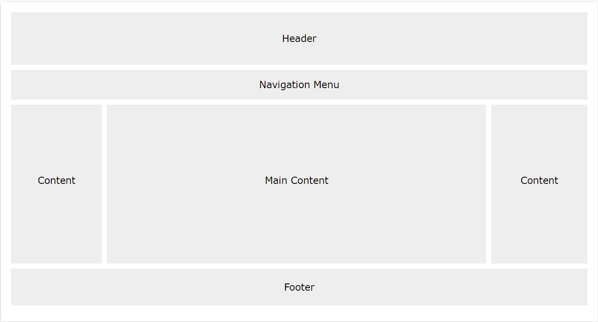

Website Layout
| Elements | Explaination | Visual Code |
|---|---|---|
| Common Layout | Header: at the top of the website (or right below a top navigation menu) |  |
| Navigation Bar: list of links to help visitors navigating through your website | ||
Content
|
||
| Footer: often contains information like copyright and contact info |
Width and Max-width
| Elements | Explaination | Visual Code |
|---|---|---|
| Without width|max-width | A block element without width|max-width => full-width |
This is a full-width element
|
| Width |
Prevent the element from stretching out to the edges of its container a horizontal scrollbar appears when the browser is smaller than 500px; |
width: 300px; margin: auto;
|
| Max-width | Improve the browser's handling of small windows |
max-width: 400px; margin:
auto;
|
CSS Display
| Elements | Explaination | Visual Code |
|---|---|---|
| display |
display: value; (default: depend on element
types) Specify if/how an element is displayed play it The most important CSS property for controlling layout Note: The values "flex" and "inline-flex" requires the -webkit- prefix to work in Safari |
display: inline; This is Tahbert Nguyen
from Vietnam display: none; This is Tahbert Nguyen from Vietnam display: block; This is Tahbert Nguyen from Vietnam display: block;(without width specified) This is Tahbert Nguyen from Vietnam display: inline-block; This is Tahbert Nguyen from Vietnam |
|
display: none; commonly used to hide elements display: none; hidden and not take up space visibility:hidden; hidden and still take up space |
||
|
display: inline-block; commonly used for list items horizontally instead of
vertically Compared to display: inline;
|
||
|
Overriding the default value Only change how the element is displayed, NOT what kind of element it is => an inline element with display: block; is not allowed to have other block elements inside it |
CSS Position
| Elements | Explaination | Visual Code |
|---|---|---|
| position |
position: static|absolute|fixed|relative|sticky|initial|inherit; Specify the type of positioning method used for an element see more |
|
|
position: static; Relative to the normal flow of the page.
|
||
|
position: relative; Relative to its original position.
|
||
|
position: absolute; Relative to the nearest positioned ancestor.
|
||
|
position: fixed; Relative to the viewport (always in the same place when scrolled)
|
||
|
position: sticky; Based on the user's scroll position (toggles between relative and fixed: relative until a given offset position is met in the viewport - then fixed) position: -webkit-sticky; /* Safari */
|
||
| z-index |
z-index: auto|number|initial|inherit; Specify the stack order of an element (which is in front of the others) (Higher number in front of lower number) (Auto: the one positioned last is shown in front of the others) |
z-index: auto;.div1
.div2
.div3
.div2 {z-index: 1;}.div1
.div2
.div3
|
| More Specific |
top: auto|length|initial|inherit; right: auto|length|initial|inherit; bottom: auto|length|initial|inherit; left: auto|length|initial|inherit; |
CSS Overflow
| Elements | Explaination | Visual Code |
|---|---|---|
| overflow |
overflow: visible|hidden|scroll|auto|initial|inherit; Specify what happens to content too big to fit into an area Applied only to block elements with a specified height |
overflow: visible;
This is Tahbert Nguyen from Vietnam working in IT.
overflow: hidden;
This is Tahbert Nguyen from Vietnam working in IT.
overflow: scrool;
This is Tahbert Nguyen from Vietnam working in IT.
overflow: auto;
This is Tahbert Nguyen from Vietnam working in IT.
|
| More Specific |
overflow-x: visible|hidden|scroll|auto|initial|inherit; overflow-y: visible|hidden|scroll|auto|initial|inherit; |
CSS Float and Clear
| Elements | Explaination | Visual Code | |||
|---|---|---|---|---|---|
| float |
float: none|left|right|initial|inherit; Specify how an element should float
|
|
|||
| clear |
clear: none|left|right|both|initial|inherit; Specify what should happen with the next element After using float property, we want the next element continue to flow, but below (not on right or left) Should match the clear to the float
|
|
|||
| Clearfix |
Problem: the floated element is taller than the container
Solution 1: Using overflow property (no need to use clear
property)
scrollbars may appear if not controlling well paddings and margins .clearfix { overflow: auto; } Solution 2: Using the modern clearfix hack (no need to use clear property) .clearfix::after { content: ""; clear: both; display: table; } |
|
CSS Align
| Elements | Explaination | Visual Code |
|---|---|---|
| Center horizontally | ||
| block element |
margin: auto; /* in fact, margin-right and margin-left */ required specified width, not full-width |
margin : auto;
|
| image |
display: block; /* from inline to block */ margin: auto; /* in fact, margin-right and margin-left */ |

|
| text | text-align: center |
text-align: center;
|
| Center vertically | ||
| padding | padding-top and padding-bottom |
padding: 20px 0;
|
| line-height | required equal value to the height property if specified |
height: 60px; line-height: 60px;
|
| multiple lines: |
div {height: 100px;} |
|
| position & transform |
This trick center horizontally and vertically Applied to the content
|
position: relative;
position: absolute;
|
| Flexbox |
This trick center horizontally and vertically Applied to the content
|
|
| Left and Right Alignment | ||
| position |
|
position: relative;
position: absolute;
|
| float |
|
container
float: right;
|